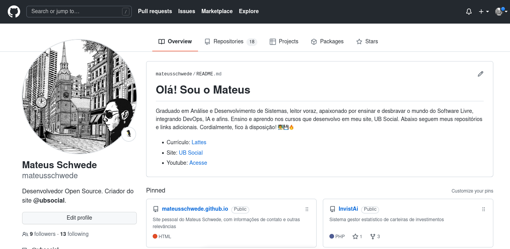

VCS - Version Control System (Sistema de controle de versão distribuído), utilizado para versionar projetos de todos os tipos e áreas. Na prática, o uso de VCS funciona da seguinte maneira: Supondo que está sendo realizado o versionamento de um projeto Design de Interiores na construção de uma casa:

 Exemplos VCS:
Desktop: Git, Subversion (SVN), Mercurial
Cloud: GitHub, GitLab, Bitbucker, GitBucker, SourgeForce, AWS, GCP, Azure
Ferramentas Git:
- Git CLI
- Git GUI Clients (GitK e GitGui - padrão, GitHub Desktop, GitKraken, SourceTree, Fork, Pocket Git, Gitfox, …)
- GitWeb
- Github CLI
- Extensões acopladas à editores de texto e IDEs
- CLI Cloud, acoplados à Web Services
Estrutura Git:
Projetos divididos em 3 estágios
1 - Working Directory (Diretorio de trabalho, pêgo do repositório para a máquina do desenvolvedor)
2 - Staging Area (Sala de espera, ficam antes de serem confirmados/envidados ao repositório)
3 - Git Directory (Repositório local)
WORKING DIRECTORY -> git add -> STAGING AREA -> git commit -> GIT DIRECTORY
Configuração Inicial Git Bash:
Instalação (Debian): sudo apt install git
Bash: git config --global user.name "seuNomeUsuario"
Bash: git config --global user.email "seuEmailUsuario"
Bash: git status (Status do repositório)
Ignorar Arquivo: Criar arquivo vazio chamado '.gitignore', com listagem dos nomes dos arquivos e pastas que serão ignorados pelo VCS
Exemplo: .gitignore, ubsocial.txt, umapasta/
Exemplos VCS:
Desktop: Git, Subversion (SVN), Mercurial
Cloud: GitHub, GitLab, Bitbucker, GitBucker, SourgeForce, AWS, GCP, Azure
Ferramentas Git:
- Git CLI
- Git GUI Clients (GitK e GitGui - padrão, GitHub Desktop, GitKraken, SourceTree, Fork, Pocket Git, Gitfox, …)
- GitWeb
- Github CLI
- Extensões acopladas à editores de texto e IDEs
- CLI Cloud, acoplados à Web Services
Estrutura Git:
Projetos divididos em 3 estágios
1 - Working Directory (Diretorio de trabalho, pêgo do repositório para a máquina do desenvolvedor)
2 - Staging Area (Sala de espera, ficam antes de serem confirmados/envidados ao repositório)
3 - Git Directory (Repositório local)
WORKING DIRECTORY -> git add -> STAGING AREA -> git commit -> GIT DIRECTORY
Configuração Inicial Git Bash:
Instalação (Debian): sudo apt install git
Bash: git config --global user.name "seuNomeUsuario"
Bash: git config --global user.email "seuEmailUsuario"
Bash: git status (Status do repositório)
Ignorar Arquivo: Criar arquivo vazio chamado '.gitignore', com listagem dos nomes dos arquivos e pastas que serão ignorados pelo VCS
Exemplo: .gitignore, ubsocial.txt, umapasta/
========== LOCAL ==========
Configurar local de trabalho do git: ir no icone do bash, com o botão direito e alterar o endereço de inicialização
Criar Repositório: Entrar na pasta com 'cd', comando 'git init'
Inserir Arquivos no Repositório: git add .
Concluir Alterações (Commit): git commit -m "descricaoCommit"
Rotina básica na prática:
Tem-se projeto (pasta) com arquivo txt, onde usuário quer versionar tal projeto:
a. Com Shell, dentro da pasta do projeto, iniciar controle: git init
b. Fazer as alterações no arquivo (Working Directory)
Verificar status: git status
c. Adicionar alterações à Staging Area: git add .
Verificar status: git status
d. Confirmar alterações: git commit -m "Descrição das alterações feitas"
Verificar status: git status
(Os processos de B à D são repetidos nas rotinas de controle de versão)
Históricos:
Ver Working Directory: git diff
Ver Staging Area: git diff --staged
Ver Commits: git log (Acrescentar '--pretty=oneline' para visualização formatada)
Ver Commits detalhado: git log -p ('j' para descer, 'k' para subir, ':q' para sair)
Ver Commits limite: git log -p -2 (2 últimos commits no log)
Ver commits com gráfico visual: git log --pretty=format:"%h %s" --graph
Edições:
Editar Commit Atual: git commit --amend -m "novaDescricaoCommit"
Remover da Staging Area: git reset HEAD arquivo.php
Remover arquivos do repositório, que foram deletados: git rm nomeArquivo
Reverter Alterações de arquivo sem commit, nem add: git checkout -- nomeArquivo
TAG: Atalho para determinado status do sistema. Exemplos: 1.0, 1.1, 1.2...
Criar tag: git tag -a nometag -m "descricaoTag"
Criar tag commit antigo: git tag -a nometag idcommit -m "descricaoTag"
Listar tags: git tag | git show nometag (Com detalhes)
Consultar por tags: git checkout nometag
Voltar a tag padrão: git checkout master
Deletar tag: git tag -d nometag
BRANCH (Ramificações): Usado para implementar nova funcionalidade em paralelo com o master (master é branch padrão)

Criar e Selecionar branch: git checkout -b nomebranch (Remover -b para simplesmente trocar de branch)
Listar branchs: git branch (-r para mostrar remotos, -a para mostrar locais e remotos)
Voltar ao master: git checkout master
Deletar branch: git branch -d nomebranch
MERGE: Passar coisas do branch x ao master
git merge branchAntigo (Branch que estou será o destino)
========== GITWEB ==========
Ferramenta Web GUI para gerenciamento do Git local

Instalar (Debian): sudo apt install gitweb
Iniciar: git instaweb --httpd=webrick
Parar: git instaweb --httpd=webrick --stop
========== GITHUB ==========
Hub de repositórios web

CLONE: Usar Repositório existente
PUSH: Enviar alterações (Upload ao servidor)
FETCH: Busca diferenças do ramo atual, sem alterar o branch
MERGE: Juntar Branch X ao Branch principal Master (Mesclar, 'Desramificar')
PULL: Baixar código atualizado (Download do servidor) / atualizar repositório (fetch+merge das diferenças / Usado após um Fetch indicar que houve alterações)
PULL REQUEST: Pedidos de melhorias(Pulls) de vários programadores. Requisitar atualização do repositório, colocando um fork ao master projeto, por exemplo
FORK: Clonar o repositório que deseja editar para sua conta no Github, para usá-lo por conta própria
ISSUE: Comentário informando erro, nova feature ao repositório. Evite issues duplicadas caso sua sugestão/dúvida já esteja presente
GIST: Compartilhar/salvar pequenos trechos de códigos e textos
BAIXAR/DOWNLOAD DO GITHUB (Clone):
Via HTTPS (Obsoleto):
1- No repositório do Github, botão Code, selecionar opção HTTPS e copiar trecho
2- Bash: git clone httpsCopiado
Via SSH:
1- Bash (Criar chave SSH): ssh-keygen -t ed25519 -C "seuEmailGithub@example.com" (Gerará arquivo ed25519.pub)
2- Bash (Copiar chave SSH): cat ~/.ssh/id_ed25519.pub
3- Ir nas configurações do Github, nova chave SSH e colar conteúdo (Título qualquer)
4- No repositório do Github, botão Code, selecionar opção SSH e copiar trecho
5- Bash: git clone trechoCopiado
ENVIAR/UPLOAD AO GITHUB (Push):
1- Mover seus arquivos à pasta baixada
2- Bash: git add .
3- Bash: git commit -m "descricaoCommit"
4- Bash: git push
GITHUB EM EQUIPE (Branch, Push,Fetch,Pull):

1- Criar novo branch: git checkout -b nomebranch
2- Criar arquivos ao novo branch e enviar alterações à Staging Area: git add .
3- Commit: git commit -m "descricaoCommit"
4- Importar ao Github (Push): git push
5- Github abrirá e solicitará o Pull Request (Pull Request), informe assunto e descrição, e confirme
6- Juntar branch com o branch master (Merge): git merge
Baixar código atualizado:
1- Verificar se o projeto local está desatualizado, com relação ao repositório no Github (Fetch): git fetch
2- Baixar atualizações do mesmo no Github (Pull): git pull
Cenário prático: Sem Branch
2 Pessoas, de mesma equipe, clonam o projeto no Github (git clone ssh...)
(Os passos abaixo, de cada pessoa, serão repetidos periodicamente)
(Podem haver casos em que uma dessas pessoas é 'Admin', com função de aceitar, ou não, os Pushes dos demais integrantes ao projeto central no GitHub, sendo também responsável pela solução de problemas e conflitos, caso os mesmos existirem)
-- Pessoa 1 --
1. Ligar máquina, acessar projeto local clonado do Github
2. Verificar se projeto central, no Github, foi atualizado por outra pessoa (git fetch)
2.1. Se sim, atualizar projeto local para última versão conforme projeto central no Github (git pull)
3. Trabalhar noCenário prático: Sem Branch
2 Pessoas, de mesma equipe, clonam o projeto no Github (git clone ssh...)
(Os passos abaixo, de cada pessoa, serão repetidos periodicamente)
(Podem haver casos em que uma dessas pessoas é 'Admin', com função de aceitar, ou não, os Pushes dos demais integrantes ao projeto central no GitHub, sendo também responsável pela solução de problemas e conflitos, caso os mesmos existirem)
-- Pessoa 1 --
1. Ligar máquina, acessar projeto local clonado do Github
2. Verificar se projeto central, no Github, foi atualizado por outra pessoa (git fetch)
2.1. Se sim, atualizar projeto local para última versão conforme projeto central no Github (git pull)
3. Trabalhar no projeto e adicionar alterações à Staging Area (git add .)
4. Confirmar alterações (git commit -m "descricaoCommit")
5. Verificar se alterações foram confirmadas (git status)
6. Subir alterações ao projeto central no Github (git push)
-- Pessoa 2 --
1. Ligar máquina, acessar projeto local clonado do Github
2. Verificar se projeto central, no Github, foi atualizado por outra pessoa (git fetch)
2.1. Se sim (Pessoa 1 fez Push conforme acima), atualizar projeto local para última versão conforme projeto central no Github (git pull)
3. Trabalhar no projeto e adicionar alterações à Staging Area (git add .)
4. Confirmar alterações (git commit -m "descricaoCommit")
5. Verificar se alterações foram confirmadas (git status)
6. Subir alterações ao projeto central no Github (git push) projeto e adicionar alterações à Staging Area (git add .)
4. Confirmar alterações (git commit -m "descricaoCommit")
5. Verificar se alterações foram confirmadas (git status)
6. Subir alterações ao projeto central no Github (git push)
-- Pessoa 2 --
1. Ligar máquina, acessar projeto local clonado do Github
2. Verificar se projeto central, no Github, foi atualizado por outra pessoa (git fetch)
2.1. Se sim (Pessoa 1 fez Push conforme acima), atualizar projeto local para última versão conforme projeto central no Github (git pull)
3. Trabalhar no projeto e adicionar alterações à Staging Area (git add .)
4. Confirmar alterações (git commit -m "descricaoCommit")
5. Verificar se alterações foram confirmadas (git status)
6. Subir alterações ao projeto central no Github (git push)
Cenário prático: Com Branch
2 Pessoas, de mesma equipe, clonam o projeto no Github (git clone ssh...)
(Em alguns casos, somente a Pessoa 1, por ser Admin, poderá criar Branches para seus demais integrantes de equipe, sendo também responsável por aceitar ou não os 'Merges', 'Pull Requests' e solucionar problemas de conflitos, caso os mesmos existirem)
Pessoa 2 realizará suas funções em outro Branch, à parte, chamado 'design'
-- Pessoa 1 (Admin) --
1. Ligar máquina, acessar projeto local clonado do Github
2. Verificar se projeto central, no Github, foi atualizado por outra pessoa (git fetch)
2.1. Se sim, atualizar projeto local para última versão conforme projeto central no Github (git pull)
3. Trabalhar no projeto e adicionar alterações à Staging Area (git add .)
4. Confirmar alterações (git commit -m "descricaoCommit")
5. Verificar se alterações foram confirmadas (git status)
6. Subir alterações ao projeto central no Github (git push)
-- Pessoa 2 --
1. Ligar máquina, acessar projeto local clonado do Github
2. Verificar se projeto central, no Github, foi atualizado por outra pessoa (git fetch)
2.1. Se sim (Pessoa 1 fez Push conforme acima), atualizar projeto local para última versão conforme projeto central no Github (git pull)
3. Criar Branch 'design' para seu trabalho (git checkout -b design)
(A partir de agora, no Branch 'design')
4. Trabalhar no projeto e adicionar alterações à Staging Area (git add .)
5. Confirmar alterações (git commit -m "descricaoCommit")
6. Verificar se alterações foram confirmadas (git status)
7. Subir alterações ao projeto central no Github, subirá com Branch 'design' (git push)
-- Pessoa 1 (Admin) --
1. Ligar máquina, acessar projeto local clonado do Github
2. Verificar se projeto central, no Github, foi atualizado por outra pessoa (git fetch)
2.1. Se sim (Pessoa 2 fez novo Branch com Push nele), atualizar projeto local para última versão conforme projeto central no Github (git pull)
(Pessoa 1 segue no Branch Master)
3. Trabalhar no projeto e adicionar alterações à Staging Area (git add .)
4. Confirmar alterações (git commit -m "descricaoCommit")
5. Verificar se alterações foram confirmadas (git status)
6. Subir alterações ao projeto central no Github (git push)
-- Pessoa 2 --
1. Ligar máquina, acessar projeto local clonado do Github
2. Verificar se projeto central, no Github, foi atualizado por outra pessoa (git fetch)
2.1. Se sim, atualizar projeto local para última versão conforme projeto central no Github (git pull)
3. Acessar Branch 'design' (git checkout design)
4. Trabalhar no projeto e adicionar alterações à Staging Area (git add .)
5. Confirmar alterações (git commit -m "descricaoCommit")
6. Verificar se alterações foram confirmadas (git status)
7. Subir alterações ao projeto central no Github, subirá com Branch 'design' (git push)
8. Voltar ao Branch Master (git checkout master)
9. Fazer Merge do Branch 'design' ao Master (git merge design)
10. Verificar se tudo ocorre como esperado (git status)
-- Pessoa 1 (Admin) --
1. Ligar máquina, acessar projeto local clonado do Github
2. Verificar se projeto central, no Github, foi atualizado por outra pessoa (git fetch)
2.1. Se sim (Pessoa 2 atualizou Branch 'design' e fez merge ao Master), atualizar projeto local para última versão conforme projeto central no Github (git pull)
(Em alguns casos, conforme acima, o admin terá de aceitar ou recusar o merge de outro integrante)
3. Trabalhar no projeto e adicionar alterações à Staging Area (git add .)
4. Confirmar alterações (git commit -m "descricaoCommit")
5. Verificar se alterações foram confirmadas (git status)
6. Subir alterações ao projeto central no Github (git push)
========== Problemas e soluções ==========
1- Há conflito de salvamento de nova versão somente quando 2 ou mais usuários modificarem o mesmo conteúdo, de um mesmo arquivo, simultaneamente e tentarem, juntos, fazer Push
Solução: Git pedirá para usuário responsável escolher qual modificação será salva, e qual será descartada
Prevenção: Organizar equipe para trabalhar simultaneamente em partes separadas do projeto (Uma pasta do projeto para cada usuário, …), utilizando, em conjunto disso, branches, onde cada usuário é responsável por sua parte do projeto, juntamente com seu branch.
2- Projetos locais desatualizados com relação ao servidor
Prevenção: Sempre, ao abrir o projeto local, primeiro executar fetch para verificar se o mesmo está desatualizado com relação ao servidor. Se sim, atualizá-lo com Pull, para então, após isso, começar a trabalhar/modificar o projeto localmente. No final do expediente, fazer Push com as modificações do dia, mantendo o projeto no servidor também sempre atualizado (Em síntese, manter o projeto local sempre atualizado com o projeto no servidor).
========== COLABORAÇÃO GITHUB ==========
a) Maioria dos projetos possuem arquivo "contributing.md", que especifica as regras de contribuição e principais necessidades do projeto
b) É importante, além da descida (Clone/Pull) e subida (Push/Pull Request) do novo código, manter um documento detalhado de todo seu trabalho nessas aventuras
c) A fachada de entrada dos projetos é o arquivo "readme.md", portanto capriche na sua edição:
1º Descrição detalhada do projeto / funcionalidades / telas do projeto
2º Diário de bordo (data e descrição em tópicos ao longo do seu trabalho/dificuldades/futuros trabalhos)
1- Copiar url do projeto que quero editar, fazer fork dele, no botão fork (Fork)
2- Clonar o projeto para a máquina local, copiando o ssh: git clone meusssh nomepastaarmazenamento
3- Editar arquivos e após:
Bash: git add .
Bash: git commit -m "descricaoCommit"
Bash: git push origin master
4- Enviar ao autor: tela do projeto, clicar no Pull Request, new Pull Request, create Pull Request (Pull Request)
5- Autor receberá um pull request do projeto para analisar, se aceitar é só clicar no Merge Pull Request
Elaborado por Mateus Schwede
ubsocial.github.io